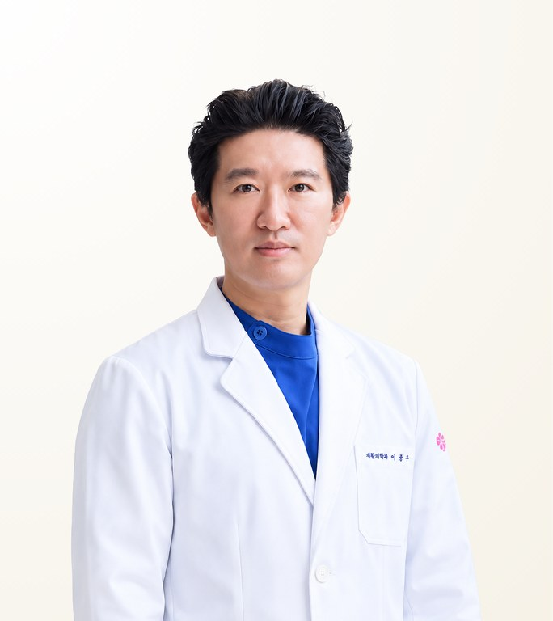

STMSTYLE 확인 의료진
김종선
Kim Jong Seon · คิม จงซอน
강남헤라성형외과 · 성형외과 전문의
- 눈밑 필러
- 실리프팅
- 특수부위 필러 및 중안면 회춘
- 경력
- 1999년 의사면허 취득, 2004년부터 성형외과 전문의
- 임상 경험
- 2012년 이후 안검성형·안검하수·중안면 회춘·안면 해부학·필러·실리프팅 분야 다수 학술 발표·강의·좌장 활동, 2025년 브라질 의료진 대상 HA·CaHA 필러 강의 및 라이브 시연 포함
- 권장 체류 일정
- 1~2일
원장 소개
김종선 원장은 서울 강남헤라성형외과의 원장이자 성형외과 전문의로, 눈밑 필러, 실리프팅, 필러와 실을 결합한 중안면 회춘 시술로 알려져 있습니다. 대한미용외과학회(KSAS) 이사로 활동하고 있으며, 2012년부터 안검성형, 안면 해부학, 필러, 실리프팅 분야에서 학술 발표와 강의를 이어 왔습니다.
Case Expertise
눈밑 필러
눈밑 꺼짐과 그늘을 개선합니다. 피부가 얇고 혈관에 주의가 필요한 부위이므로, 안검성형과 안면 해부학 분야의 학술 경험을 바탕으로 층과 깊이를 정밀하게 판단해 주입합니다.
실리프팅
흡수성 실로 중안면과 하안면의 처진 조직을 끌어올립니다. 유지인대와 노화 방향을 먼저 읽어 실의 방향과 개수를 정하고, 필요한 경우 필러를 함께 계획합니다.
특수부위 필러 및 중안면 회춘
광대 아래부터 팔자주름까지의 볼륨 감소와 처짐, 마리오네트 라인, 목주름, 입술을 개선하며, 골격과 지방구획을 바탕으로 필러와 실을 조합합니다.
그 외 진료 가능
사용 재료 · 장비
영상
원장 Q&A 영상자세한 내용은 LINE으로 문의해 주세요진료 철학
수술 해부학에 기반해 골격·지방층·유지인대와 노화 방향을 먼저 읽고, 필러와 실리프팅을 조합해 최소침습적으로 자연스러운 얼굴 균형을 만듭니다.
— 김종선
STMSTYLE 평가
STMSTYLE은 김종선 원장의 강점을 오랜 안검성형·안면 미용 학술 경험을 바탕으로 골격, 지방구획, 유지인대와 연부조직을 함께 보는 구조적 접근으로 평가합니다. 특히 눈 주변과 중안면처럼 섬세한 판단이 필요한 부위에서 필러와 실리프팅을 복합적으로 설계합니다. STMSTYLE은 최소침습적인 방법으로 자연스러운 균형을 원하는 환자에게 김종선 원장을 추천합니다.
STMSTYLE경력 및 학력
전체 경력 보기
학력
- 서울대학교 보건대학원 최고위과정
면허·자격
- 의사면허 1999
- 성형외과 전문의 2004
- APTOS Professional Course 수료 2026
경력
- 현 강남헤라성형외과 원장
- 안검성형·안면해부학·중안면 회춘·필러·실리프팅 분야 학술 발표·교육 강의·좌장 2012–2026
- 브라질 의료진 대상 HA·CaHA 필러 강의 및 라이브 시연 2025
학회 활동
- 대한미용외과학회(KSAS) 이사
- 국제쁘띠의학회 이사
- 대한안성형학회 정회원
- 미국 미용외과학회 정회원
- 아시아 미용성형학회 정회원
자주 묻는 질문
김종선 원장은 눈밑 필러를 잘하나요?
네. 눈밑 필러는 김종선 원장의 주력 시술 중 하나입니다. 눈밑은 피부가 얇고 혈관에 주의가 필요하므로, 안검성형과 안면 해부학 분야의 학술 경험을 바탕으로 주입 층과 깊이를 신중하게 정합니다.
김종선 원장은 어떤 환자에게 잘 맞나요?
김종선 원장은 눈밑 꺼짐, 볼 처짐, 중안면 볼륨 감소가 있으면서 최소침습 시술로 자연스럽고 균형 잡힌 결과를 원하는 환자에게 잘 맞습니다. 환자의 얼굴 구조에 따라 필러와 실을 함께 조합하는 경우가 많으며, 시술 적합 여부는 대면 상담에서 결정됩니다.
김종선 원장에게 시술을 받으려면 한국에 얼마나 머물러야 하나요?
김종선 원장의 시술은 1~2일 체류를 권장합니다. 여러 부위를 함께 진행하는 경우 병원에서 중복 시술을 검토한 뒤 하나의 계획으로 안내하므로, 이전 필러·실 시술 이력과 여행 일정을 미리 알려 주시기 바랍니다.
김종선 원장은 어떤 실과 필러를 사용하나요?
김종선 원장은 리프팅에 민트실과 민트이지실을, 그리고 국산·수입 필러와 국산·독일산 보톡스를 사용하며, 반복 시술 시 항체 형성 가능성을 줄이기 위해 복합단백질을 제거한 제제도 사용합니다.
김종선 원장이 직접 시술하나요? STMSTYLE을 통해 상담할 수 있나요?
네, 김종선 원장이 병원 원장으로서 직접 시술합니다. 방콕 STMSTYLE을 통해 LINE 또는 WhatsApp으로 상담을 시작하실 수 있으며, STMSTYLE이 병원과 일정 및 조건을 조율해 드립니다. 최종 치료 계획과 비용은 대면 상담 후 결정됩니다.
정보 출처
출처 및 확인 기록 보기
| 항목 | 출처 | 확인일 |
|---|---|---|
| 면허, 전문의 자격 및 경력 | 강남헤라성형외과 제공 이력서, 면허 및 국문·영문 프로필 | 2026-08-30 |
| 학회 활동 및 학술 활동 | 병원 제공 학술대회 자료 | 2026-08-30 |
| 시술 및 패키지 정보 | 강남헤라성형외과 공식 블로그 | 2026-08-30 |
| 소개 영상 및 전후 사례 | 병원 제공 영상 및 실리프팅·필러 사례 사진 | 2026-08-30 |
| 대면 미팅 및 환자 코디네이션 | 협업을 통한 STMSTYLE 직접 확인 | 2026-08-30 |
확인 기록 · 2026-08-30
STMSTYLE은 장기 협업, 대면 미팅, 환자 코디네이션, 이력서·면허·병원 공식 자료와의 교차 확인을 통해 김종선 원장의 프로필을 확인했습니다.